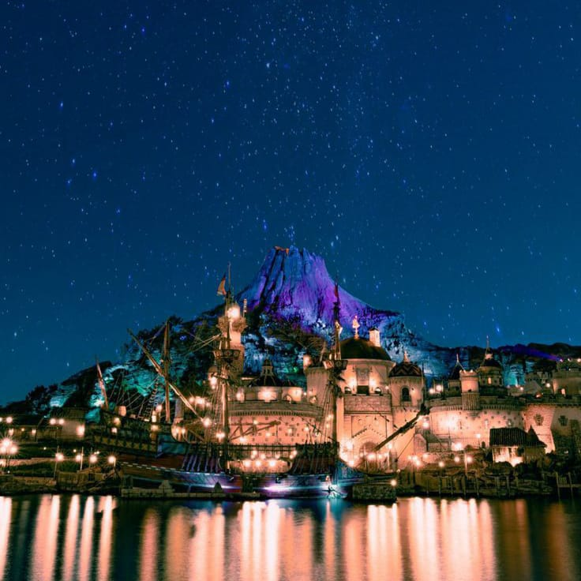

DesneySea Tokyo

DisneySea adalah taman hiburan bertema laut yang terletak di Tokyo Disney Resort di Urayasu, Chiba, Jepang. Taman ini dibuka pada tanggal 4 September 2001, dan merupakan taman hiburan Disney pertama yang dibuka di luar Amerika Serikat. DisneySea didesain dengan tema pelayaran dan penjelajahan, dan terbagi menjadi tujuh area tematik: Mediterranean Harbor, American Waterfront, Port Discovery, Lost River Delta, Arabian Coast, Mermaid Lagoon, dan Mysterious Island.
DisneySea tempat yang tepat untuk dikunjungi oleh wisatawan dari segala usia. Dengan berbagai atraksi, pertunjukan, dan restoran yang bertemakan laut, DisneySea menawarkan sesuatu untuk semua orang.